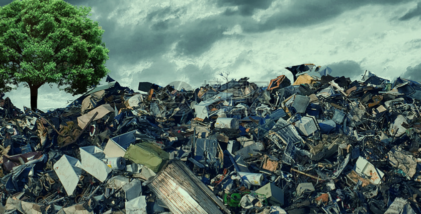

保护环境
我是一条鱼，今天我去西村的朋友家去玩，路很黑，我找半天没找到，渴死我了，我喝了点水，然后肚子火辣拉的疼，最后疼的失去了意识。
当我醒来的时候，我发现我躺在了医院的急诊室。大夫告诉我说，我喝了机器厂排出来的污水，那水含有重金属，富含多种有毒物质，已经没救了，让我准备遗言吧。 我很难过，这一切的罪恶都来自于人类，我要控诉！！！
“人类把他们要吃的东西好多都封装在塑料袋里，进行深度包装，食品也进行深加工，添加各种化学品，然后那些食品包装袋到处乱扔”，这是我听来的故事。我就想不懂，那些爱吃零食的小姑娘， 吃新鲜的东西不好吗，一天三顿吃不饱，可以多吃两顿呀。
“满柜的衣服还嫌不够穿，你干嘛不一天一件呢，一小时换一件呢，你们的衣服是纸做的吗，穿身上就坏”。  “地地地，为了地你们弄死了多少动物，推倒了多少树木，难不成地球都是你们家的，你们人类的命是命，我们的命就不是命吗”。
“陆地上垃圾放不下，就放海里，不知道害死了多少动物，再这样贪得无厌，整个地球估计都放不下你们的垃圾”。
“造手机的也是，年年出来个新品种，小年轻呢，以为有多好玩，出来新的就扔掉旧的，电子垃圾产生了多少”。
“咳咳咳。。。”
小鱼还没把遗言讲完，就因伤势太重挂掉了，呜呼哀哉！
卒